Three collections, one disciplined cold chain. Every item below is graded, packed and shipped under the same protocols — from Kenya's highlands to your shelf.
Grown in the cool highlands around Nairobi and Naivasha, our flower stems are graded for stem strength, bloom size and vase life before entering the cold chain — exported weekly to markets worldwide.
Our roses come in classic red, blush and specialty varieties with deep colour, long strong stems and excellent vase life.
Long-lasting standard & spray blooms, richly coloured and high-yield.
Multi-headed blooms with exceptional vase life and low pollen drop.
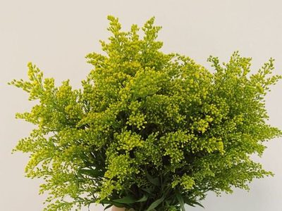
Papery, long-lasting filler blooms, popular fresh and dried.
Berried filler stems adding texture and colour to mixed bouquets.
Striking thistle-like blooms with a cool blue-green tone.
Hand-picked at optimum maturity across Kenya's fertile highlands and coastal belts, our fruit range is graded, pre-cooled and packed for extended shelf life before entering the same disciplined cold chain to markets worldwide.
Avocados are available across Hass, Fuerte and Pinkerton varieties, prized for rich flavour and creamy texture.
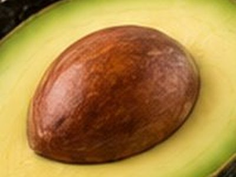
Hass, Fuerte & Pinkerton varieties, rich flavour and creamy texture.
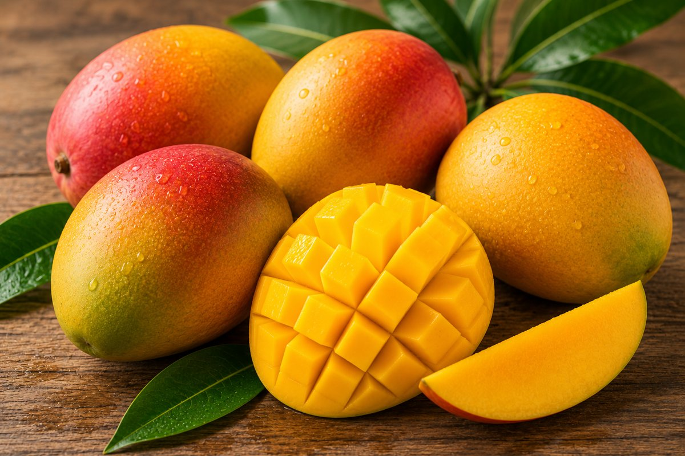
Sweet, fibre-free Kent & Apple varieties, hand-picked and pre-cooled.
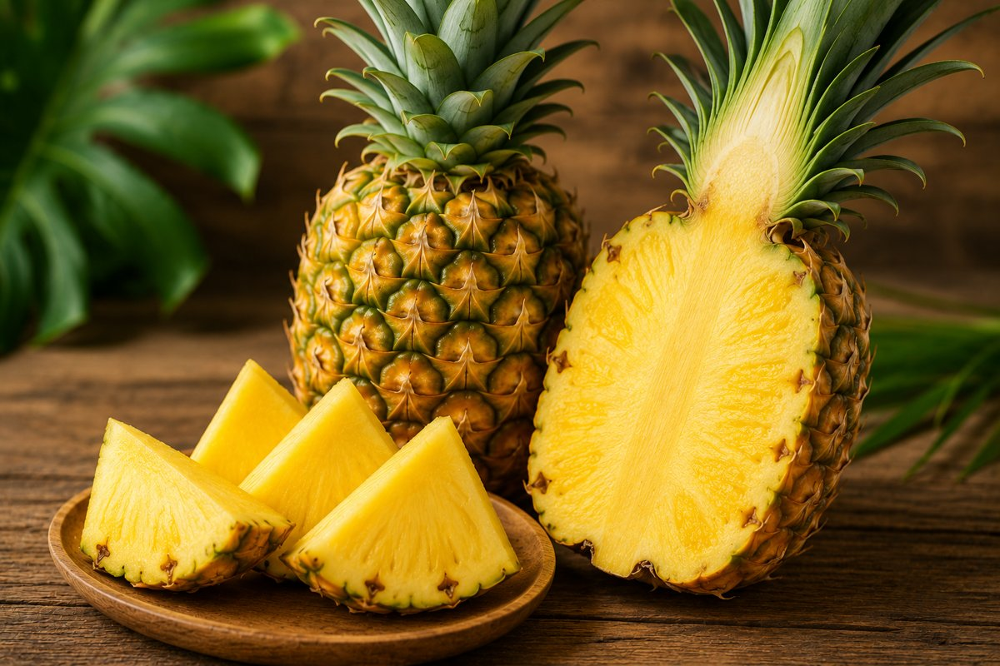
Smooth Cayenne, harvested at ideal sugar content for export.
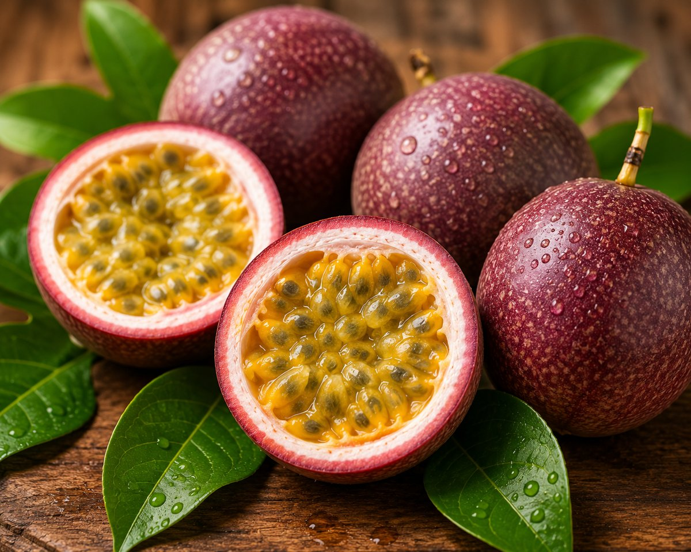
Aromatic purple variety, hand-sorted for size and skin quality.
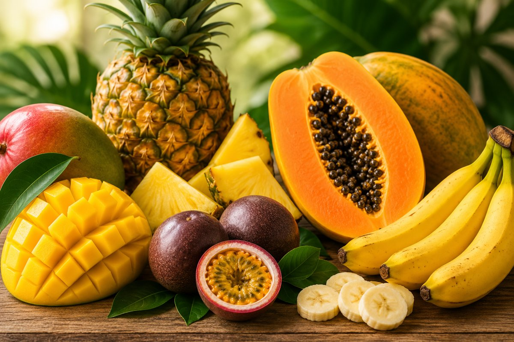
Solo & Red Royale varieties, smooth flesh and long shelf life.
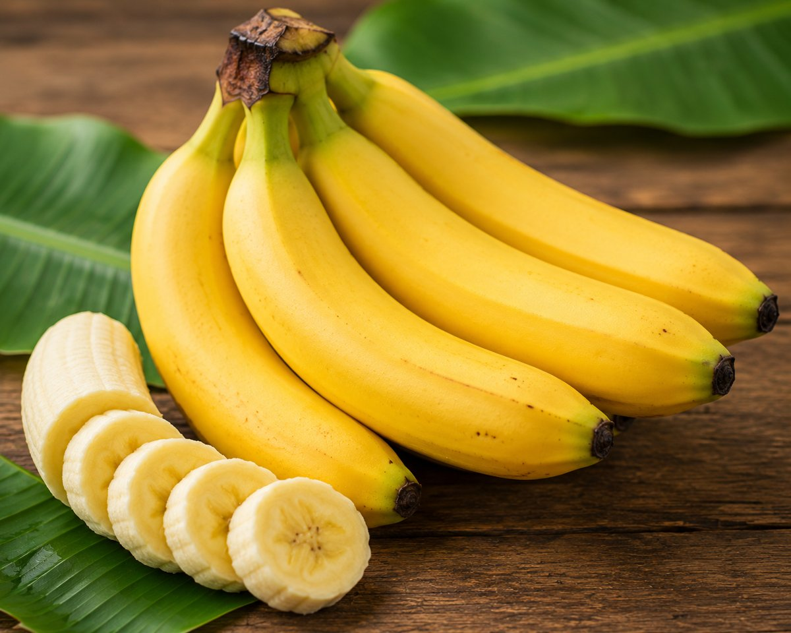
Consistently sized Cavendish, harvested green for controlled ripening.
A newer, fast-growing division of our export portfolio: vibrant chilies and aromatic fresh herbs, harvested to order and packed under the same strict cold-chain conditions as our flowers and fruit.
Chilies are packed in 2 kg / 5 kg cartons and shipped year-round across Europe, the Middle East and Asia.
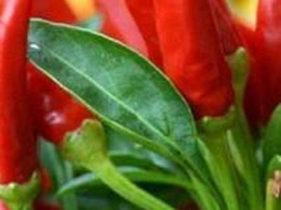
very hotIntense heat, vibrant colour and consistent quality — one of East Africa's most sought-after export chilies.
A milder, elongated chili prized for its clean flavour and versatility.
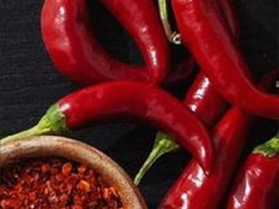
hitA slender, consistently hot pepper widely used fresh, dried or ground.
Thick flesh, moderately hot — well suited to fresh retail and food-service markets.
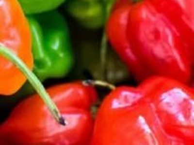
Extremely HotFragrant, intensely hot pepper with a distinctive fruity note.
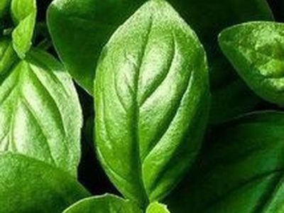
Aromatic and versatile, a food-service & retail staple.
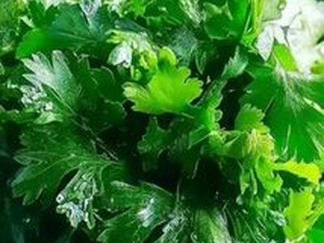
Bright, citrus-forward herb in constant global demand.
Cooling herb popular in culinary & beverage use.
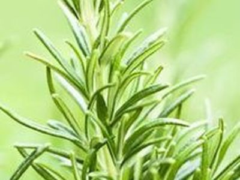
Robust, woody herb with excellent shelf life.
Delicate, fragrant — strong demand across European kitchens.
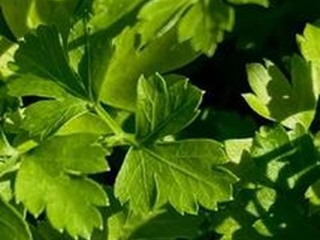
Curly & flat-leaf varieties, a steady kitchen essential.
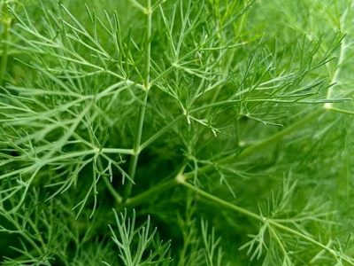
Oregano, chives, tarragon & lemon balm also available.
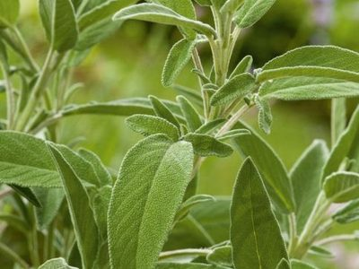
Earthy, robust herb with strong culinary and aromatic use.
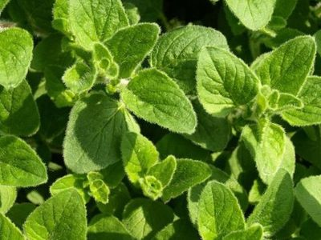
Pungent Mediterranean herb, fresh or dried.
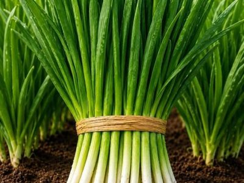
Delicate onion-flavoured herb, popular as a fresh garnish.
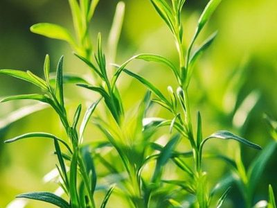
Anise-scented herb favoured in French cuisine.
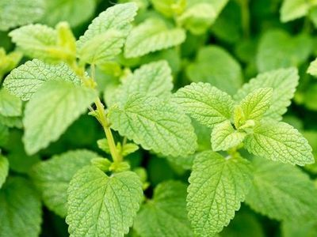
Citrus-scented mint-family herb for culinary & tea use.
For pricing, sample orders, or to set up a weekly shipment from any of our collections, get in touch with our global export desk.